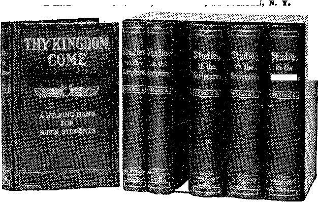

BROOKLYN, N. Y.
Vol. V.
No. 11.
George F. Viett, of Norfolk, Va., has made public a startling letter he received from <M. Cremedas, a young Greek who left Norfolk a year ago with a party of his countrymen to fight against the ■ Turks. ‘Cremedas, in his letter, says that Dr. Valois Damien, a physician from Paris, who served in a semi-official ca-' pacity with the Greek forces at Janina during the military operations about the city, performed some remarkable surgical experiments.
According to Cremedas, Dr. Damien brought with him from Paris ninety wealthy patients suffering with diseased kidneys and other organs, and established an invalid camp at Philates, a small town fifteen miles from Janina.
Dr. Damien made several unsuccessful attempts to obtain an audience with ihe king, but was finally successful when
ITS SYMBOLIC TEACHINGS CORROBORATE BIBLE’S STATEMENTS.
[The following article is contributed by PASTOR RUSSELL, who has made repeated visits to the Great PYRAMID of Gizeh, and has been the discoverer of many valuable symbolisms, hitherto hidden in its mysterious passages. For a complete and detailed study of the subject we commend his illustrated book entitled “THE DIVINE PLAN AND THE GREAT PYRAMID,” 448 pages, cloth bound 50c., postpaid. BIBLE & TRACT SOCIETY, Publishers, Brooklyn, N. Y. Orders may be sent, if desired, through us.—Ecfftor.]
a sum of money was contributed by of the invalids to equip a battery the army. •
Commanders of the divisions at front were given orders to send
one for
Damien all recently killed soldiers that ae needed. The experiments then commenced. Upon the receipt of a dead body the doctor and .his assistants proceeded to transfer the healthy and still living organs desired from the corpse to the body of one of his patients. Old men on the verge of the grave from Bright’s disease had the source of their trouble removed, and the healthy organs of some strong man put in their place. These transfers are said to have included no less than three of the vital bodily organs and numerous smaller operations, in which forty were a complete success, while there was a loss of only ten out of the ninety.—'New York Herald.
it IN that day there shall be an altar to । » the Lord in the midst of the land
. of Egypt, for a sign and for a witness.” ; (Isaiah 19:19, 20.) Not only did God mention prophetically the great Pyramid
■ in Isaiah, but also in Jeremiah 32:20, where we read that “He set signs and wonders in the land of Egypt, even unto ■this day.”
' It is intensely interesting to visit this land of the Pharaohs, at one time so in-! timately associated with God’s “chosen people”—Abraham, Isaac, Jacob, Joseph ! and his brethren. It is interesting to : imagine ourselves back at the period of ■ the Exodus of the Israelites, to note the .place where tbe Israelites. probably crossed the tongue of the Red Sea upon the sandbar made bare by a strong wind. It was interesting to visit what the
■ Arabs still designate the “Wells of ! Moses,” and to note that they are still ! brackish or bitter springs, “Waters of ! Mavah.”
' But to me the most interesting thing ' in this ancient land is the Great Pyra-
referred to in our text. Its location
coast, and, seeking the explanation, found that the fan-like delta started from the 'Pyramid; and he exclaimed, “That stone witness is in a more important physical situation than any other building erected by man.” This fits Isaiah’s description, “An altar in the midst of the land of Egypt, a pillar at ■the border thereof.”
I must not attempt here a presentation of the iscientiific details of this great Monument which is now speaking to the world, both on scientific and religious subjects. I can only hope to arouse sufficient interest to lead you, dear readers, to learn the particulars. I will merely offer some suggestions by way. of bringing your curiosity to the point of investigation.
'Scientists tell us that the measurement of its base on the four sides, at the level of its sockets, when added, gives as many pyramid cubits as there are days, in four years, to the fraction—including the leap-year fraction. The diagonal meas-
mit corner, which lifts its solemn index finger to the sun at midday, and by its distance from the base tells the mean dis. tance to the sun from the earth. And if we go back to the date which the Pyramid gives itself, we find a far sublimer indication. Science has at last discovered that the sun is not a dead center, with planets wheeling about it, but itself stationary. It is now ascertained that the sun also is in motion, carrying with it its splendid retinue of comets, planets, its satellites and theirs, around some other and vastly mightier Center.
“Astronomers are not yet fully agreed as to what or where that Center is.
Sothe, however, believe? that th;
found the direction
.7 hav:
of it to be The
Pleiades, and particularly of Alcyone, the central one of the renowned Pleiadia stars. * * * Alcyone, then, as far as iScience has been able to perceive, would seem to be ‘the midnight throne’ in which the whole system of gravitation has its Central iSeat, and from which the Almighty governs Uis Universe. And hers is the wonderful corresponding fact, tbs*
That the churches of all denominations Are rapidly losing ground in England was ihe recent admission of the Rev. Frederick Brotherton, secretary and former president of the National Federation of Free Churches, an organization representative of nearly all the non-conformist de-<, nominations.
The Rev. Mr. Meyer, who has just celebrated his sixty-sixth birthday, is England’s most eloquent and scholarly Baptist churchman, and his position enables him to speak with authority on the alleged decadence of Christianity in John. Bull’s island. He recently joined with the bishop of London in asking the “London News and Leader” to desist from the project of taking a religious census of London, and both the Baptist and Anglican leaders admitted to a fear that such < counting of noses might show discouraging figures. The Rev. Mr. Meyer has found a constant decrease in church-going in London, while the population of the City is steadily increasing.
The spirit of worldliness, he declares, affects all classes. Sports, motoring and Week-end parties largely occupy the attention of the wealthy, while the growth of Socialism is alienating the poor.—Exchange. -. .
The University Congregational Church, Of Chicago has been experimenting with moving pictures as a means of teaching •children of the Sunday School. The experiment has proved successful.
All eyes appear to be directed toward the Photo-Drama of Creation, which will be produced throughout the world shortly by means of moving pictures. These pictures, said to be the finest of their kind, are expected to create a sensation and a religious awakening such as the world lias never known.
This article was published in a recent! issue of THE BIBLE STUDENTS MONTHLY, Vol. 5, No. 3. The interest aroused and the great demand for copies of it have been remarkable. A sample 3opy will be mailed to any one free iipon receipt of post-card request. is remarkable, and its size centuries ago marked it as one of the Seven Wonders of the world—a building covering nearly thirteen acres. Its scientific lessons brought forth during the past fifty years by astronomers and other scientists are still more wonderful, but most wonderful of all to us are its prophetic teachings, first brought to our attention by Prof. Piazzi Smyth, Astronomer Royal for Scotland, and others.
The Pyramid is located on an elevated, level plain overlooking the river Nile. Peculiarly, the delta of the Nile forms a sea coast, which in shape is a true quarter circle, with the Great Pyramid marking the center angle. This was discovered by iMr. Mitchell, of the United States Coast Survey, in 1808. He observed the regularity of the curvature around the whole of Egypt’s northern urements across the base, N, E. to S. W., and N. W. to S. E., give as many inches as there are years in the precessional cycle of the stars. This cycle astronomers had already concluded to be 25,827 years, and the Pyramid corroborates the conclusion. The distance to the sun is indicated by the height and angle of the Pyramid to be 91,840,270 miles, which almost exactly corresponds with the latest figures reached by astronomers. The Pyramid also has its own way of indicating standards of weights and measures, based upon the size and weight of the earth.
The Rev. Joseph iSeiss observed, “There is yet a grander thought embodied in this wonderful structure. Of its five points there is one of special preeminence, in which all its sides and exterior lines terminate. It is the sum-at the date of the Great Pyramid’s building * * * the Pleiades were distributed over the meridian of this Pyramid, with Alcyone precisely on the line. Here, then, is a pointing of the highest and sublimest character that mere human Science has ever been able to so much as hint, and which would seem to breathe an unsuspected and mighty meaning into that speech of Job, when he demanded, ‘Canst thou bind the sweet influences of Pleiades?”’
Prof. Smyth tells us that he finder astronomically, that the Pyramid was built in 2170 B. C. He tells us that at that particular time the Dragon Star, the personification of evil, was in line with its Descending Passage. The inference
(Continued on page 2, 2d column.)
THE BIBLE STUDENTS MONTHLY
W. F. HUDGINGS, Editor.
IS* IS, 17 HICKS ST., BROOKLYN, N. Y.
Monthly—12 ct«. a year* Single cop es, lo*
An Independent, Unsectarian Religions Newspaper, Specially Devoted to tlie Forwarding of the Laymen’s Home Missionary Movement for the Glory of God and Good of Humanity.
Minister* of the I. B. S. A. render their services at raner&la free of charge. They also invite correspond-•ooof rom those desiring Christian counsel.
ia Germany it is said that the three greatest organizations in the world are the Kaiser’s army, the Standard Oil Co. and the Catholic Church.
REV. DAVIDSON’S REPUDIATIONS.
In burning his vestments and prayerbook Rev. Charles Steel Davidson, rector of an Episcopal Church at Fincastle, Va., said: “Here, too, I proclaim the Bible as the sufficient rule of faith and order— as the sufficient guide-hook and prayerbook for everyone that is begotten of the Holy Spirit.
“Here I renounce and repudiate the ministry of the Episcopal Church, but I retain the ministry which I received from the Lord Jesus, and which the church never gave and cannot take away.”
PREACH THE GOSPEL.
No mistake is greater than the mistake of the minister who conceives it to be his duty to preach politics from the pulpit. To an audience who have read the daily papers all the week and the Sunday paper that very morning, nothing is more superfluous than a political discourse in church. A prominent clergyman, during a whole Presidential campaign, preached' Sunday after Sunday against one of the candidates, to a constantly decreasing audience. On the night when the returns came in, the object of his attacks was apparently successful, and he cried out in despair, “What can be done now?” He was effectively answered by one of the ungodly who happened to be present: “I don’t see that there is anything left for you now, doctor, except to preach the Gosyel”
WHERE ARE THE COLORS?
In time of battle to advance the colors end bring the troops up to them is a thrilling sight and a matter of supreme moment. If the colors have been shot down some one must seize and plant them again; if the color bearer has fallen and the flag has gone down with him some comrade, at all risks, must dash forward and throw the standard again to the breeze, if the army is to win the day.
Where are the colors of the militant host of Methodism to-day? Have they not gone down or are we not trailing them in the dust? On them is written Holiness unto the Lord. Time was when, this was the battle cry of our then increasing and advancing phalanxes. It gleamed everywhere on our banners; it was shouted in all our camps. In other words, time was when regeneration and holiness were preached in all our churches and taught in all our homes and proclaimed by every itinerant that pressed his way into scattered settlements or wrought in villages and cities, till multitudes everywhere with, broken hearts and streaming eyes sought and found Christ a personal Savior and went forth to bring other souls to repentance and holy living.
Here and there among us are some who have the fulness of spiritual life and power, but they are too few. The general spiritual decadence of Methodism is the most. alarming fact that confronts our Church to-day. The tide of our spiritual power is turning hack like a refluent wave. 'Our numerical strength is virtually at a standstill as a result. Restore to our people the doctrine and experience of the “full salvation” of other years, not with the old terminology but an that of the living present, and the wonders that would follow would amaze the world. The “Call to the Colors” by Dr. Jame® Mudge in the current number of the Methodist Review has the sound of a trumpet. Will the church heed it? •O, for a new unfurling of our colors and a mighty rallying to them!—Northern •Christian. Advocate.
the battle or abmageddon.
In a recent issue of BIBLE STUDENTS MONTHLY this subject was fully treated from the standpoint of the Scriptures. A sample copy will be sent free upon request
THE GREAT PYRAMID A DIVINE ORACLE.
(.Continued from 1st page, 4th column.) is plain when once we perceive that the 'Pyramid pictures the history of the world. The Downward Passage represents the downward course of sin and death of the human race under “the Prince of the power of the air,” under “the god of this world.”
History in general corroborates this. The lower part of the passage ceases to be. downward, and becomes horizontal to the large chamber in which it ends. That chamber, wide and high, but with troubled floor, may well be understood to represent the time in which we are living—the time in which the downward-ness of our race has been measurably arrested, and when mankind are comparatively freed from the superstition which bowed down our forefathers; but the uneven floor indicates “a time of trouble,” into which we believe we have already entered. Theological, social, political and financial troubles are in the pathway of humanity, and this means such anarchy as has been threatening in
Spiritual Lessons Here Taught.
A key suggested in 1868 by a young Scotchman, Robert (Menzies, and which began to open the Pyramid’s religious lessons, was the Well. He wrote to Prof. Smyth, “From, the north beginning of the Grand Gallery, in upward progression, begin the years of our Savior’s life, expressed at the rate of a year for an inch. Three and thirty inch-years therefore bring us right over against the mouth of the Well.” In other words, that Well and the appearance of an explosion, picture our Lord’s death and resurrection. In harmony with this the Downward Passage represents the course of sin and death, leading to destruction. The low .Ascending Passage, blocked by the Granite “Plug,” represents the Law •Covenant given to the Jews, but Which none of them were able to keep perfectly, because “there is none righteous, no, not one”—none capable of fulfilling the demands of God’s Law because of hereditary weaknesses.
From the time of our Savior the Gospel Dispensation began, symbolically represented by the Grand Gallery. It is a Dispensation of grace or favor; nevertheless, its Passageway is steep and narrow, leading to the “Goal” at the farther end. As the Grand Gallery has an end, so this Gospel Age will have an end. It will accomplish its purpose, which is the gathering of the “elect” of God, to be the Bride of Christ and His joint-heirs in His Kingdom, which is to bless the world.
Another interesting feature is that the Ascending Passage with its Plug represents exactly the length of the Jewish Age 1 And, similarly, the Grand Gallery represents, an inch to a year, the length of this Gospel Dispensation J It indicates that at a certain time the great favor, of becoming joint-sacrificers with the Redeemer, aa-d thus becoming jointheirs with Him in His Heavenly Kingdom, will terminate. The privilege of walking in the “narrow way” off selfsacrifice, in £he footsteps of Jesus, for the Truth’s sake, will thus end. “Now is
KING'S
CHAMOIS
£AJICCPHA< OR. COFFER
•China and other Eastern lands, and which the Scriptures clearly declare will overwhelm Christendom.
, Brighter and Better Things.
Centuries ago an Arabian Caliph, Al Mamoun, believing the Pyramid to contain great wealth, spent a fortune in digging into its interior, not knowing of its Entrance Passage, which at that time may have been covered with the casing stones. He finally reached the Downward Passageway, but behold, the strenuous labors of his workmen dislodged a stone in the roof of the Downward Passage, and showed an Upward Passage, left concealed when building the Pyramid.
Al Mamoun’s men found that Upward Passage blocked with a large granite block which they were unable to dislodge; and it is still there. Eager for treasure, they worked their way around it and found above it an Ascending Passage of about the' same height as the Descending Passage, which ends in what is 'known as the Grand Gallery. It has the same steep grade as the Ascending Passage. It is narrow at the base, but wider higher up, and seven times as lofty as the Ascending Passage.
The interior of the walls of these passages is of creamy marble or limestone, and the Grand Gallery has seven overlappings on each of its side walls, and both the lower and end walls overhang. At its upper end is the Ante-Chamber. Through another low Passage we enter •what is known as the King’s Chamber. At the juncture of the low Ascending Passage with the Grand Gallery, is a level Passage which leads off to what is known as the Queen's Chamber, directly 'Under the King’s Chamber.
Thus the low Ascending Passage, the low Horizontal Passage, and the floor of the Grand Gallery, all come together at one point, and there we find what is known as the Well, an irregular Passage which leads downward and connects with the Downward Passage toward its lower end. This Well and the Passage • leading to the Queen’s Chamber apparently were secreted by the builders; but something like an explosion tore away the top stones covering the Well and the lower portion of the Grand Gallery, and thus disclosed the Well and also the Passage to the Queen’s Chamber. So far for our description.
the acceptable time”—now is the time when God is willing to accept these living sacrifices, which He declares are “holy and acceptable to God” (Rom. 12: 1), through the imputation of Jesus’merit.
The King’s Chamber Granite.
But while the Grand Gallery as a whole stands as a representative of the entire Gospel Age, at its top we have illustrated the steps necessary to be taken by each and every one who would constitute a member of the Bride class, to become new creatures, to become partakers of the divine nature, sacrificing all that appertains to our human nature. The Ante-Chamber represents the present life of God’s consecrated children. Its peculiar wainscoting seems to symbolically say that lessons must be learned by each one who enters—in other words, it symbolizes the .School of Christ, in which consecrated believers have lessons of faith, experience, patience and fortitude to prove their worthiness to pass beyond into Heaven itself, represented by’ the King’s Chamber.
Before entering this Ante-Chamber, or school, the pupil must stoop low, for it is entered by a low Passage, implying humility. And no sooner has he risen than he finds himself confronted by a huge granite obstruction, known as the Granite Leaf, and he can make no further progress except by bowing low to
PASTOR RUSSELL’S STUDIES in THE SCRIPTURES
BIBLE AND
SOCIETY, Publishers, BROOKLYN
TRACT
THESE Most Helpful BOOKS are PRINTED in 19 LANGUAGES and sold without profit so as to enable all to have them. MORE THAN SEVEN MILLION COPIES are in the hands of the thinking public 1 All should have them)
Vol. I-—“The Divine Plan of the Ages Vol, II—“The Time is at Hand” Vol. Ill—“Thy Kingdom Come” pass under it. Granite seems to be used in the Pyramid in much the same way that Gold was used in Israel’s Tabernacle—to symbolize things Divine. This Granite obstruction threatens to block our way, and requires us to bow low before it. iSymbolically, it says, It is not sufficient that you have a desire for Godliness, and faith in Jesus, and a desire to be taught of Him; you cannot go further unless you make a full surrender to God—unless you bow to the Divine will absolutely, in consecration to God.
A marvelous Library of religious knowledge and history of mankind
THE ENTIRE SET OF SIX VOLUMES (over 3,000 pages) NwW ?2.65 POSTPAID SPECIAL OFFER: With each set of STUDIES IN THE SCRIPTURES purchased at the reduced price of $3.95 we will also give as a premium one year’s subscription to THE WATCH TOWER, Pastor Russell’s sixteen page, sems monthly religious journal. ORDER TO-DAY from Publishers.
And here another lesson is taught. From the moment the pupil bows under 'the Granite obstruction he begins to tread on the same Granite floor which constitutes the floor of the King’s 'Chamber. The lesson seems to be that from the moment of full consecration the disciple of Christ is begotten of the Holy Spirit to the divine nature, symbolized by the Granite. His new standing thus declares-him in Scriptural language a New Creature.
The passage leading from the. Ante-Chamber to the King’s Chamber is just as low as the Granite obstruction, which seems to say that as the one represents a condition of death' of the will, the other represents actual death—only by actual death could our 'Savior or any of His followers pass into the heavenly state, symbolized by the King’s Cham-, ber; for, as 'St. Paul declares, “We must all be changed,” 'because “flesh and blood cannot enter the Kingdom of God.?
Human Restitution Pictured.
We understand the Horizontal Passageway leading to the Queen’s Chamber •to symbolically represent the trials and testings that will be upon the human family incidental to attaining human perfection under the glorious reign of Messiah, when the Church as the Bride of Christ will be associated with her Lord in effecting human restitution to all the willing and obedient.—Acts 3:19-23.
If, as we believe, God has in this great mountain of stone caused to be outlined the Divine Plan of the Ages, it undoubtedly will tell its wonderful story in trumpet tones, “in that day.” What we can appreciate of its teachings in harmony with the Bible we find wonderfully comforting in this day when skepticism is so rife.
At this time, particularly, it is refreshing to Christian faith to find not only the Bible itself opening before us. and one quotation illuminating another and all uniting in the testimony that God is Love, but that the Messianic Kingdom so long promised is. at Aand^nd that it- -will bring, as foretold, great joy to all people, with the best opportunity for returning to Divine favor and everlasting life. At this time it refreshes our hearts to note the testimony of God’s great Stone Witness in the land of Egypt—• testifying to Divine foreknowledge of the evil that has been upon the world, and respecting the Divine arrangement for the election of the Church, and through it, as 'Messiah’s Kingdom, the blessing of every creature.
A very interesting pamphlet, explaining every verse in the Bible in which the word Hell is found, will be sent on postal-card request, free. Address, Bible & Tract Society, Brooklyn, N. Y.
Vol. IV—“Th® Battle of Armageddon*
Vol. V—“ The Atonement”
Vol. VI—“Th® New Creation”
THE PEACE OF GOD
“And the peace of God, which passeth all understanding, shall keep your hearts and mindsi through Jesus Christ.”—Phil. 4:7.
PEACE is defined to be a state of quiet, or tranquility, freedom from disturbance or agitation—calmness, repose. Such a state of mind our text affirms of God. His is a mind tranquil, calm, undisturbed, never agitated, nor even, wearied nor perplexed by any of the cares of His vast dominion. Yet this (perfect peace of God. the (Scriptures show, is due neither to the fact that there are no disorders in His vast domain, nor yet to any stoical indifference to pain or pleasure, but rather to that perfect poise of His glorious attributes which makes Him Master of His situation as Sovereign of the whole Universe.
Have we admired the coolness and calm eelf-possession of a great general, such as Grant or Napoleon, in the midst of the confusion and smoke of battle? or of a great statesman, such as Gladstone or Bismarck, in the midst of national perplexities and perils? or of skilled physicians or others in critical times and places? These are only faint illustrations of the peace of self-possession and self-confidence which rules in the mind of God. He is never confused, bewildered, perplexed, anxious or care-worn, nor in the least fearful that His plans will miscarry or His purposes fail, because all power and wisdom inhere in Him.
The scope of His mighty intellect reaches to the utmost bounds of possibility, comprehends all causes and discerns with precision all effects; consequently, He knows the end from the beginning, and that, not only from philosophical principles, but also by intuition. .As the Creator of all things and the originator of all law, He is thoroughly, acquainted with all the intricate subtleties of physical, moral and intellectual law, so that no problem could arise the results of which are not manifest to His mind. “God is light, and in Him is no darkness at all.”—1 John 1:5.
God, the Creator of all things, is also the competent Sustainer of all things. In silent grandeur, from Age to Age, the whole physical Universe fulfils His will, without a suspicion of disorder or mishap ; and the same Power is pledged for its sustenance throughout the eternal future.
Thus from His own vast, inherent resources of Power and Wisdom springs the peace of God. But not . from this source alone is the Divine. peace; for peace is the certain concomitant of inherent goodness. God is the impersonation of every virtue and every grace; and consequently He has the blessed satisfaction and peace of conscious moral perfection as well as inherent Wisdom and Power.
God’s Emotional Nature.
Yet we find this peace of God co-existing; with much of disorder and trouble. As a Father He shows us that He bears a father’s love to all His intelligent creatures—“the whole family [of God] in Heaven and in earth”—and that for His “pleasure they are and were created.” (Ephesians 3:15; Revelation 4:11.) He created them in His own likeness—with the same mental and moral attributes, so that He might have communion and fellowship with them as sons, and.they with Him as a Father, that, thus, in mutual fellowship and communion, the Creator and the creature might find pleasure, happiness and delight.
This likeness of God includes in all not only the same mental faculties, but also the free exercise of the same in the. formation of character. A creature incapable of thus forming character would not be in God’s likeness. And for the purpose of developing character, the alternative of good and evil must be placed before him. The right and the wrong principles of action must be discerned and the individual left free to his own choice in the matter, that the pleasure of God may be realized in the virtuous character resultant from the free choice of righteousness.
iSince the love of God for His newly created and innocent creatures is akin to, but much stronger than, the love, of an earthly parent for an innocent infant; and since that loving interest and solicitude does not grow cold, as the creature advances in years, but earnestly, watches for the development of the principles and fruits of righteousness, it is manifest that, like an earthly parent, God experiences the sense of either pleasure or pain, according as His free, intelligent creatures choose the right course or the wrong. Of this we are fully assured, not only by thus reasoning from the fact of His Fatherhood, but also by all of those Scriptures which speak of some things as abominable, displeasing, hateful and despicable to Him and as giving Him no pleasure; which say that His anger burns against them, and that His indignation and wrath wax hot, even to their destruction. Other iScriptures speak of His pleasure, love, joy and delight in pleasing things—in the principles, of righteousness and those who obey them. The appreciation of pleasurable emotions necessarily implies ability to appreciate emotions of an opposite character, for pain and plea
sure may properly be considered the ebb and flow of the same emotion.
These exhibitions of the mind of God indicate clearly an emotional nature in the Divine Being, of which fact we might also judge from the realization of our own emotional nature, since man was created in God’s image. No, our great God is nbt a God of stoical indifference, insensible to the emotions of pleasure and of pain; but the perfect poise of His attributes preserves the equilibrium of peace under all circumstances, whether of pain or pleasure.
God’s Peace Unbroken by External Discord.
With this thought, then, let us consider the circumstances under which the marvelous Peace of God has been perpetually maintained. The deep-laid Plan of God in all His creative works required long aions [ages] for its accomplishment. Across the vista of Ages He saw in His purpose the glory of an intelligent creation in His own likeness, established in righteousness and worthy of His gift of eternal life. He therein saw the mutual pleasure of the Creator and the creature, and with a peaceful patience He resolved to wait for the glorious consummation.
As the Plan developed and time rolled on, the free moral agency, of His creatures, misused by ■ some, was enabling them to develop evil characters. By this means discord was introduced into His family—“the family [of God] in Heaven and in earth”—all His creatures, angels and men; and the family was divided, some holding to righteousness and some choosing to do evil. But such a contingency was one of the foreseen necessities of the far-reaching Plan, the glorious.outcome of which was, in the Divine judgment, worth the cost of all the trouble and loss which He foresaw.
What a dreadful thing is family discord ! How a prodigal son or a wayward daughter often brings the gray hairs of the human parent down with sorrow to the grave! Ah, the Heavenly Father knows something of such sorrow; for He saw Satan, one of His sons (Isaiah 14: 12), an angel of light, fall as lightning ■from Heaven. (Luke 10:18.) For six thousand years, at least, that son has been in open, defiant rebellion against God, and most actively and viciously engaged in inciting further rebellion and wickedness. God saw many of the angels leave their first estate (Jude 6) and become the allies of .Satan, and then. He saw also the whole human race fall into sin. Did ever any human parent find such a conspiracy?—-so virulent and hateful-spring up in his family? Surely not!
Then God found it necessary to perform the unpleasant duties of discipline. In His Justice He must disown the disloyal sons and deal with them as enemies. Though all the while His Fatherly Love was preparing to bless the deceived and fallen ones when the purposes of redemption should restore the repentant to> His favor, Love must be veiled, while only stem, relentless Justice could be manifested. This has been no happifying duty, nor has the attitude of the sinner been pleasing to Him.
Consider the Love against which these recreants sinned. Though from God cometh every good and perfect gift, His favors have been despised, His love spurned, His righteous authority conspired against and defied. His character maligned, misrepresented, made to appear odious, hateful, unrighteous and even despicable. Yet, through it all the peace of God continues, and for six thousand years He has endured .this contradiction of sinners against Himself. And still, O wondrous grace! His Love abounds; and it is written that He so loved the world, even while, they were yet sinners, that He gave His Only-Begotten Son to die for them; and that through Him judgment (trial) is also to be extended to those angels that fell, with the exception of iSatan, the leader and instigator of the whole conspiracy—the father of lies.—John 3:16; 1 Corinthians 6:3: Jude 6; Hebrews 2:14; Revelation 20:10, 14.
God’s Peace Compatible With Sorrow.
This gift of Divine Love was another indication of the cost to our Heavenly Father of His great and marvelous Plan. Not only did He behold the fall into sin of a large proportion of His family, but their recovery cost the sacrifice of the dearest treasure of His heart, and the subjection of this beloved One to the most abject humiliation, ignominy, suffering and death. Again the illustration of a parent’s love assists us in comprehending the cost of this manifestation of Jehovah’s Love. With what tender and yearning emotions of Love must He have made this sacrifice of His beloved Son, in whom he was well pleased! In addition to all the graces of character manifested since the very dawn of the being of the Logos, was now added the further grace of full submission to the Divine will, even when the nathway pointed out was one of humiliation and pain.
Ah, did the Father let Him go on that errand of mercy without the slightest sensation of sorrowful emotion? Had He no appreciation of the pangs of a father’s love when the arrows of death pierced the heart of His beloved Son? When our dear Lord said, “My soul is exceeding sorrowful, even unto death,” and again, “Father, if it be possible, let this cup pass from Me: nevertheless, not as I will, but as Thou wilt,” did it touch no sympathetic chord in the heart of the Eternal? Yea, verily; the unfeigned love of the Father sympathetically shared the Lord’s sorrow.—Matthew 26:38, 39.
The principle taught in the Divine Word, that true love weeps with those that weep and rejoices with those who rejoice, is one which is also exemplified in the Divine character. The immortal Jehovah could not Himself die for us, His Divine nature being proof against death. And even if He could have died, there would have been no higher power to raise Him out of death. Thus all creation would have been left forever without a Governor, and only disaster and ruin could have ensued. But God could and did sacrifice at great cost to His loving, fatherly nature, the dearest treasure of His heart; and thus He manifested (1 John 4:9) the great Love wherewith He loved His deceived and fallen creatures,. If this sacrifice cost Him nothing, if it were impossible for His mind to realize any painful emotion even under such a circumstance, then the gift of His Son would be no manifestation of His Love; for that which costs nothing, manifests nothing.
Our Lord Jesus also manifested His great sympathy for the Father in the misrepresentation of His character which He has so patiently endured for Ages. It was the one effort of His life' to glorify the Father and to rectify among men the false impressions of His glorious character—to show to men His goodness, benevolence, love and grace, and to lead them to love the merciful God who so loved them, even while they were yet sinners, as to seek them out and to plan for their eternal salvation.
God’s Peace Self-Centered.
Yes, there has been great commotion in the disrupted family of God—commotion in which the Lord declares He hasi had no pleasure (Psalm 5 :4) ; but, nevertheless, the Peace of God has never been disturbed. In the full consciousness of His own moral perfection. His unerring Wisdom, His mighty Power, and with the fullest appreciation of Justice and the keenest and most ardent love of the beauty of holiness, patiently and peacefully, and even joyfully in the midst of tribulation, He has endured the contradiction of sinners against Himself for six thousand years.
But during the seventh millennium, according to the Divine purpose, it will be the joyful privilege of our Lord Jesus fully to manifest to all creatures in. Heaven and in earth the Father’s glorious character. Then will the Father rejoice in the grandeur of His finished work and in the evenlasting peace and happiness of His family in Heaven and on earth, “reunited under one Head.”—• Ephesians 1:10.—Diaglott.
This blessed consummation will not be realized, however, until the incorrigible fallen sons of God, disowned and disinherited because they loved unrighteousness and would not be reclaimed, shall have been cut off. This will be the last unpleasant duty of the Creator and Father of all, who positively declares that ■it is a sad duty, yet nevertheless one which He will have the fortitude to perform in the interests of universal righteousness and peace. Hear Him: “As I live, saith the Lord God, I have no pleasure in the death of the wicked; but that the wicked turn from his way and live; turn ye from your evil ways; for why will ye die?”—Ezekiel 33:11.
Thus we see that the Peace of God is compatible with great commotion and with sorrow and pain of any kind; for it is not dependent upon outward circumstances, but upon the proper balancing of the mind and the conditions of a perfect heart. Such peace—the Peace of God—was enjoyed also by our. Lord Jesus in the midst of all the turmoil and confusion of His eventful earthly life. And this brings us to the consideration of our Lord’s legacy to His disciples, when 'He was about to leave the world, as expressed in His own words:
“Peace I leave with you, My peace I give unto you: not as the world giveth [in stinted measure or in perishable quality], give I unto you. (Let not your heart be troubled, neither let it be afraid.”— John 14:27.
Our Lord’s Last Will and Testament.
Thus with abounding compassion and tenderness, did our Lord, on the last night of His earthly life, bestow upon His beloved disciples His parting blessing, His legacy of Peace. It was the richest legacy He had to bequeath, and was one of priceless value. It was the promise of that tranquility of soul, that rest and ease of mind, which He Himself possessed—the Peace of God. It was the same peace which the Father has Himself always enjoyed, even in the midst of all the commotion which the permission of evil has brought about; but it was not derived from the 8@me source. In Jehovah this peace was self-centered; He realized in Himself the omnipotence of Power and Wisdom; while the peace of Christ was centered, not in Himself, but in God, by faith in His Wisdom, Power and Grace. So also if we would have the Peace of God, the peace of Christ—“My peace”—it must, like His, be centered in God by faith.
Yes, the peace of Christ was a priceless legacy. Yet how quickly the stormcloud of trouble, which was even then growing very dark, burst in its fury upon the heads of those very disciples to whom the words were directly addressed. It followed almost immediately the gracious bequest, and struck consternation, bewilderment, .confusion, to their hearts and shook their faith from center to circumference. Then, where was the peace? While the Lord was speaking the words, the foul betrayer, Judas, was out on his murderous errand. Then followed the agony in Gethsemane, and the terror and consternation.among the disciples as they began to realize the fate of their beloved Lord. Soon their almost breathless suspense deepened into more fearful forebodings as He stood aione before His merciless accusers and persecutors in the Hall of Pilate and the Court of Herod, while they were powerless to shield Him, Then came the tragic end—'the horrors of the crucifixion.
What Had Become of the Peace?
Where was the promised peace under such circumstances—when, overcome with fear and dread, they all forsook Him and fled; and when St. Peter, although anxious to defend Him, was so filled with fear that three times he denied his Lord and with cursing declared that he never knew Him? The explanation is, that the peace had not yet come; for as the Apostle Paul tells us, “Where a testament is, there must also of necessity be the death of the testator. For a testament [a bequest] is of force, after men are dead; otherwise it is of no strength at all while the testator liveth.” (Hebrews 9:16, 17.) But as soon as the tragic scene was over and the cry, “It is finished,” fell upon their eager ears, strange as it may seem, there is evidence ■that peace began to steal into their grieving hearts. The darkened heavens, the quaking earth, the rending rocks, the torn veil of the Temple—all spoke to them a message of comfort which the world could not receive.
To the world (Jews and Gentiles, both participating in the crime) the language of these events was that-of Divine wrath and indignation against them. And as fear fell upon the people, and the clamor and excitement of that awful day died away, they smote upon their breasts and returned to their homes. The Roman centurion and they that were with him, fearing greatly, said, “Truly this wa® the (Son of God!”
But to the disciples of the Lord these events spoke a very different language. The cause of their blessed Master was their cause and it was God's cause. To them these supernatural demonstrations were evidences that God was not regarding this matter with indifference; and though through the veil of darkness they could not read His bright designs, in these events there was a whisper of hope.
Three days later hope was revived by the news of our Lord’s resurrection, confirmed to them by His appearance in their midst. Again forty days later hope was strengthened by His ascension after His parting counsel and blessing and promised return, and the instructions to tarry in . Jerusalem until they received the promise of the Father, the Comforter, the Holy Spirit of adoption, not many days thence-yat Pentecost. Then the peace of Christ, the Lord’s rich legacy, began to be realized, and the tarrying days of. prayer and expectancy were days of abiding peace—peace which flowed as a river. But when on the day of Pentecost the promised Comforter came, the river of. their peace found a deeper bed; and their joy knew no bounds!
“Like a river glorious is God’s perfect peace. Over all victorious in its glad increase. Perfect; yet it floweth fuller every day; Perfect; yet it groweth deeper all the way.”
Our Rich Legacy of Peace.
(But not alone to the early Church was this legacy of peace bequeathed. It is the blessed inheritance of the entire Church, even to the end of the Age. The Lord showed His thought for us all on that very day, when in His prayer He said, “Neither pray I for these alone, but for them also which shall believe on Me through their word.”—John 1.7 :20.
'What richer legacy could the Lord have left His beloved people? Suppose He had bent His energies during His earthly life to the accumulation of money; and that in so doing He had amassed an immense fortune to leave in the hands of His disciples wherewith to push forward the great work of the Age when He should be taken from them! How soon would it all have vanished, and how poor would be our inheritance to-day! “Th? Man of Sin” would surely have gotten hold of it in some way, and not a vestige of the legacy would have reached this end of the Age. But His rich legacy of neace still abounds to His people!
God Preparing for the Harvest.
“Of the times and seasons, brethren, ye have no need that I write unto you, for yourselves know perfectly that the day of the Lord so cometh as a thief in the night; for when they shall say, Peace and safety, then sudden destruction cometh upon them, as travail upon a woman with child, and they shall not escape. But ye, brethren, are not in darkness that that day should overtake you as a thief; ye
are children of the light.”—I. Thessalonians 5:1-5.
THE common tendency of the human text declares that “Ye, brethren, are not mind is expressed by >St. Peter, who in darkness” respecting this time. This
prophesies of the present time that the worldly will be saying, “Where is the promise of His presence? * * * All things continue as they were from the foundation of the world.” Ignorance of God’s Plan is to be expected of the world, but the true people of God have the •promise of His special instruction so that they need not be in darkness respecting the Divine Program.
Our world for six thousand years has been the battle fieid between the forces of light and darkness, truth and error, righteousness and sin. The Prince of ■Darkness, otherwise styled the “'Prince of this world,” has led his forces in person, and has controlled the masses and is still controlling them. The Prince of Light is represented in a (feeble way by ambassadors who are specially cautioned by Him that they must not use carnal weapons nor carnal methods, but must in meekness correct those who oppose them. They must be subject to “the powers that be” to the extent that their consciences will permit, and so far as possible live peaceably with all men.
This experience of subjection to the powers of evil has been a hard lesson, difficult to learn; a trial of faith as well as of endurance, the value of which has been difficult sometimes to appreciate. But these must walk by faith and not by sight if they would please the Captain of their salvation. For centuries the prayer has gone up to God from their hearts, “How long, 0 Lord 1” Reason assures them that it cannot be the Divine purpose to forever permit the victory of sin and death under the Prince of Darkness.
Plowing, Sowing Reaping.
a great
God represents Himself as „ _
Husbandman. Each Age is a “season”
Age has
and bears its own crop. , Each . ______
its own time for the plowing of the field, . the sowing of the good seed, and the harvest work. As Bible Students we
have already noted the work accomplished in the Age which ended with the flood, the different work accomplished during the Patriarchal Age, and the’ still different work accomplished during the Jewish Age, which lasted from the death „ . - n - —..
of Jacob, and particularly from the giv- Gospel Age ignores all, sectarian, all de-ing of the Law, down to the death of Eominational all national haes The
- ° ’ Lord knoweth them 'that are His. The
Our Lord’s ministry of three and a half years was a harvest time to the Jewish people in the close of their Age of favor or “day of visitation.” He said to IHis disciples, “I sent you to reap that whereon ye bestowed no labor; other men labored and ye are entered into their labors.” (John 4:38.) The plowing and sowing connected with the Jewish Dispensation was in the far past. The Egyptian bondage served to do a plowing work, as also Israel’s escape from that bondage and the forty years of wandering in the wilderness before they reached Canaan. The giving of the Law and the establishment of them as a people, the lessons of their sacrifices, and the exhortations of their Prophets, all constituted a seed-sowing, harrowing and cultivating experience. In the, end of their Age Jesus gathered the ripe fruitage of that experience—those sanctified thereby and developed in character and obedience to God.
"The crop gathered by our Lord and the Apostles in the Jewish harvest numbered thousands. These were gathered out of Judaism and from under the Law Covenant into Christianity — gathered under a Covenant applying only to, the “Church which is the Body of Christ.” This Covenant, under which they became associated with Messiah, reads, “Gather together My saints (holy ones) unto Me,” saith the Lord, “those who have made a Covenant with Me by sacrifice.” (Psalm 59 :5.) All coming thus into relationship to Jehovah as members of the Body of Messiah came by way of, the cross—• through a recognition of their own imperfection, and of Jesus and. His sacrifice as the satisfaction for their sins, a covering for their blemishes, by which alone their sacrifices were rendered “holy and acceptable to God.”—(Romans 12:1.
Sowing Follows Reaping.
The reaping work of the Jewish Age merged into the sowing work of the,Gospel Age as the invitation to become joint-sacrificers with Jesus was extended to those having hearing ears amongst nations aside from the Jews. For eighteen centuries this sowing work, with “harrowing” experiences and various cultivations, has been in progress. Now in turn we have arrived at the harvest of this Gospel Age—the reaping time, the time of gathering into the garner—beyond the veil—by the power of the First Resurrection.
“None of the wicked shall understand, but the wise shall understand” (Daniel “‘‘ilO), is the 'Lord’s declaration. Our
implies, either that the brethren are very
few, or that a considerable number of them have not yet .become’ sufficiently awake to a discernment of the times and seasons in which we are living. Many df the brethren and many of the world and many of the “wicked” do realize that we are living in strange times and under peculiar conditions. These try to persuade themselves, however, that what we see to-day is merely a recurrence of what has repeated itself time and again during the past centuries. Thus these lull themselves, saying, “Peace and safety!”
This attitude is what the Scriptures foretell, “When they shall say peace and safety, then sudden destruction cometh (upon them.” It is only “ye, brethren,” who are privileged to have the clearer light respecting present and future conditions. 'We know that we are in the Harvest time of this Age—the reckoning time—the testing time—the time when the “wheat” is to be gathered into the heavenly “garner”—the time when the field is to be cleared of all “tares” in a fiery trouble—'the time when the plowshare of trouble will be run through the world of mankind to prepare the whole world for the New Dispensation just about to (begin.
The Plowman Overtakes the Reaper.
Illustrating the Divine methods and the rapid following of events in the Divide Program, the Lord through the Prophet tells us that “the plowman will overtake the reaper.” (Amos 9:13.) So accurately timed is every feature of the Divine Plan that part fits to part and work to work closely. The Harvest of the, present time is the gathering of the fruitage of this Gospel Age—the gathering of the Church of the First-born, whose names are written in heaven”—• those who have made a Covenant with Jehovah by sacrifice.
The Head of the saintly Messiah, developed and glorified eighteen centuries ago, is Jesus. The' members of the Body of this Messiah have been gathered from every nation, first from the Jews and then from all nations. God’s call and selection of saintly sacrificers in this
winds of violence, “the powers of the air,” which will shortly be loosed, and which will produce the terrific “storm,” are being held back until the sealing of God’s servants in their foreheads shall have been accomplished.
This sealing in the forehead implies an intellectual appreciation of heavenly things, and is intimately associated with the harvest work—the sealed are the ripe wheat being gathered for the heavenly garner. As soon as the sealing work shall have been accomplished the winds, of strife and trouble will be let loose according to the (Master’s declaration, and the result will be a “time of trouble such as never was since there was a nation” —no, nor ever shall be the like again. The awful lessons which will then be learned by humanity will be sufficient for all time. The strife, the hatred, the malignity, the anarchy of that day of trouble are depicted in various places in the Word of God.
The trouble time impending is indeed, declared to foe a time of Divine wrath, and we must not lose sight of that feature of it. Divine Justice has indigna-' tion against in-equity and selfishness in general, for selfishness is but another name for sin. All sin is selfish, and all selfishness is sin. The captains of industry, the captains of education, and captains of wealth have to-day greater
opportunities and therefore greater re- a ings, slanders, oppositions to rignteous-
sponsibilities than the kings of the earth have not departed from thy judgments, will wo;k blessings for us, as for their dealings with their fellowmen.- for thou hast taught me. How sweet are ,fhPv’did for onr Lord
(Similarly, there are leaders of the people, presidents and secretaries of unions, etc., who are also captains, and who also have great responsibility. All perceive that 'the world of humanity is rapidly nearing a crisis. The almost miraculous opening of the eyes of understanding which God has recently granted has (brought to the world mechanical inventions and chemical processes which are making the world rich with amazing rapidity.
Although these blessings are in considerable measure reaching the masses of mankind and uplifting all to a higher plane of comfort, nevertheless general education has opened the eyes of human understanding correspondingly. “The common people” are looking with amazement at the luxury of the rich as the barbarians of old looked upon the much lesser splendors of Rome. They are covetous, they are hungry for what they term their “share” of the bounties being dispensed by Providence with so lavish a hand.
Even if the vast increase of wealth
through machinery, chemistry, etc., were tions, they will be “raised spirit bodies’ to be evenly distributed we doubt if it
would satisfy these new-born minds.
Two Possible Solutions.
, There seem to be two possible solutions : (1) To convert all of the wealthy into saints, whose pleasure it would be to administer the flood of wealth now rolling in upon them for the general blessing of mankind, along the' most benevolent lines imaginable, or (2) to convert into saints the masses of mankind and to so imbue them with heavenly hopes and prospects that they would not particularly care for earthly good things nor crave them, but rather rejoice to be “the poor of this world, rich in faith, heirs of the heavenly Kingdom.”
We confess that neither solution seems to be practicable. We cannot believe that either can be accomplished; hence we must believe what the Bible teaches, that an awful conflict is about to be precipitated between these two classes, because neither one nor ,the other can be fully converted to the Lord’s way. How gladi we are that the Bible shows that the culmination of the conflict Will bring everlasting peace—a. just, loving, equitable and satisfactory adjustment of earth’s affairs, under 'Messiah’s glorious reign of a thousand years.
The Divine Arrangement.
Someone may ask, Would not these same difficulties beset any new government which Messiah or others might institute? Will not the element of selfishness forever persist in the human heart, and will not this imply that to all eternity there will be a strife of selfish interests? We answer, No. The Divine Plan solves the problem perfectly. Jesus has demonstrated His unselfishness as respects earthly things. His laying down of His life not only proved His loyalty to righteousness and to the' Father’s will, but proved also His unselfishness—His love—“greater love hath no man than this, that a man lay down his life for his friends.”—John 15 :13.
This Friend of humanity is to be the great King of the world in the New Dispensation, and His associates in the Kingdom, the Bride class, are to be such only as have His spirit and disposition of obedience to the Father’s will—self-isacrifice and love for fellowman—unselfish love. Under present conditions these may not always be known, nor their true character and unselfishness be discerned, because they have the treasure of the new mind in “earthen vessels” which do not always fully represent their true benevolence of heart.
The Divine provision is that such of these as shall demonstrate their unselfishness of heart and loyalty to the Lord shall be given new bodies in the resurrection—“sown in weakness, they will be raised in power; sown in dishonor, raised in glory; sown an animal body,” with Adamic weaknesses and fleshly imperfec-
Cultivate Appreciation of the Principles of
the Divine Law.
teachers, for thy testimonies are my vre are rigm-iy exerciseu uy vui. meditation. I understand more than the various experiences and follow as closely ancients, because I keep thy precepts. I ag possible the commands laid down for have refrained my feet from every evil ,0Ur guidance, will find that even revil-way, that I might keep thy Word. I ings, slanders, oppositions to righteous-
for thou hast taught me. How sweet are rlfd fnr LoriT thy words unto my taste! yea, sweeter t y '
than honey to my mouth I Through thy
^T^HILE seeking to follow the various “v specific commands of Scripture, let us seek more and more to understand and come in sympathy with the principles which underlie the Divine Law. These will enable us to judge of the right and the wrong of such of our words, thoughts and acts , as may not be particularly specified in the Lord’s Word. Indeed, as we come to understand and sympathize with the principles of Divine Law, to *hat extent we are getting the spirit of Lie Divine Word. Note the testimony of the Psalmist on this point, “O how love I thy law 1 it is my meditation all the day. Thou, through thy commandments, hast made me wiser than mine enemies, for they are ever with me. I have more understanding than all my' precepts I get understanding; therefore, I hate every false way. Thy Word is a lamp unto my feet and a light unto my path.”—Psa. 119:97405.
Do Not Trust to Conscience Alone
Shun a contentious and fault-finding disposition as contrary to the spirit, or disposition of Christ—contrary to love. A certain amount of combative courage is demanded in overcoming the world, the flesh and the Devil and their various snares. This fighting disposition may become a valuable aid to ourselves and to the Master’s cause if rightly and wisely directed against sin, first in ourselves and secondly in others; if used for the 'Lord and his people and against (Satan and all his powers of darkness and superstition. This, in the Scriptures, is called fighting the good fight, and we all should be gallant soldiers in this battle for Right and Truth, lovingly defending our Captain’s honor and his people’s liberties.
If conscience were a sufficient guide
—perfect, complete, lacking nothing.—I. 'Corinthians 15:42-44.
These, in association with their Redeemer, will constitute the Kingdom class which is to rule the world for a thousand years under the Headship of Jesus. Surely, we can trust these, we can have confidence in them. The fact that God has selected them, and that He is pleased to' give over to them the rulership of the world for a thousand years testifies beyond peradventure their worthiness and capability.
That Government will not be a republic, but a monarchy, a theocracy., a Divine Kingdom. Christ and His Bride will be the King and Queen of the New Dispensation, supplanting 'Satan and the (fallen angels, who for centuries have been in control. The Kingdom of God will be as invisible as the kingdom of darkness has been. It will operate through human agencies, as does the other. But even its human agents have been provided. The Scriptures inform us that the worthy ones of the Jewish Dispensation and before, will be the 'Princes in all the earth who will represent Messiah’s Kingdom amongst men. Not only so, but they will be perfect men, made so by participation in the
How grand the
“resurrection of life.” prospect I
The time of trouble, be awful, will be' short, terrible trouble which
although it will as typed in the came upon the
Jewish nation following the harvest work of their Age. Then will come the leveling process, which in the’ Divine order will prove to be a blessing to everybody; In other words, the socialists and anarchists are not so far from a correct conception of what must ultimately prevail, but they are far astray respecting the methods by which it shall be obtained. Their attempt to grasp the rudder of the world’s affairs shows an entire lack of appreciation of the mighty influences with which they1 seek to contend. Their efforts will merely precipitate upon themselves and upon others the terrible trouble which the Scriptures foretell.
'God’s people are distinctly warned that they must keep hands off, must not interfere with the powers that be; their reliance must be upon the Lord and not in the use of carnal weapons. St. James, writing on this subject, declares the coming trouble and tells that it will be? specially severe upon the rich: “Go to now, ye rich men; weep and howl for your miseries that shall come upon you.” (James 5 :1.) No doubt the troubles will be equally upon the poor; but to them ■they will seem less severe since they have been accustomed to less. To God’s people is the message, “Be patient, brethren, the coming of the Lord draweth nigh”; “Wait ye upon Me, saith the Lord.” (Zephaniah 3:8.) “Seek meekness, seek righteousness, it may be that ye shall be hid in the day of the Lord’s anger.”—< Zephaniah 2 :3.
you would have no need of the Scriptures. The majority of people have,as good as no conscience; for they are blind to the principles and laws of God given to guide conscience; and still worse off than these are those mentioned in 1 Tim. 4 :2. Hence the imperative necessity for carefully heeding the Lord’s Word, and. walking circumspectly according to its light.
We are not to faint in our minds nor become discouraged, feeling that so much has been said against us that we must give up the race. On the contrary, we are to feel assured like our Lord, that
nothing can befall us except with the : knowledge of the Father, who is work- I ing all things for our good. It was thus | our Lord was prepared for His exaltation. ' (So we, if we are rightly exercised by our
FREE LITERATURE!
Send postal-card request to the Editor for free copies of this paper. Some of the interesting subjects you may have for asking are:
Calamities—Why Permitted?
Creed Idols Smashed!
Spiritism Is Demonism!
Cardinal Gibbons’ Sermon.
Prince Lucifer «of Old Now Prince of Demons.
The Hope of Immortality.
Do You Believe (in the Resurrection?
Most Precious Text.
Our Lord’s Return.
Which Is the True Gospel?
What Is the Soul?
The Rich Man in Hell.
Thieves in Paradise.
'The Handwriting on the Wall.
Purgatory ‘Fires’. Not Now, But Soon.
Greatest Thing in the Universe.
The Sabbath Question
The Battle of ArmageMon.